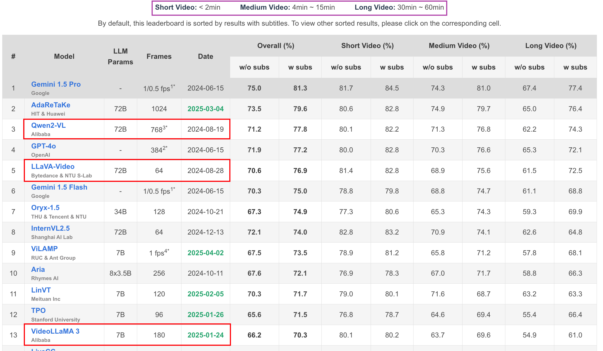
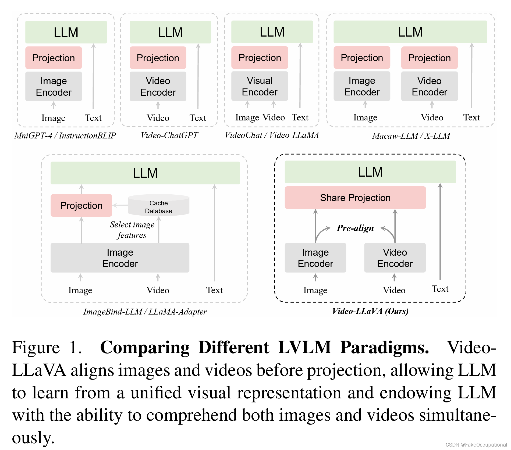

VLLM多模态理解
1. VLLM（Vid-LLM）总述：
多模态视觉理解：
- 图片-语言理解：LLAVA、LLAVA1.5、LLAVA-NEXT-IMAGE
- 视频-语言理解：LLAVA-NEXT-VIDEO、VideoLLaMA系列、Qwen-vl系列
博文阅读：
综述论文：
MM-LLMs: Recent Advances in MultiModal Large Language Models（2024.2.20)
Video Understanding with Large Language Models: A Survey（2024.1.4）
多模态数据集构造学习：LLAVA
多模态数据集清洗学习：VideoLlaMA3


2. Qwen-VL系列 论文技术解读🤏
2.1 Qwen2.5-VL:
微调相关代码：
https://github.com/datawhalechina/self-llm/tree/master/models/Qwen2-VL
https://github.com/QwenLM/Qwen2.5-VL/tree/main/qwen-vl-finetune
- 介绍：
基于Qwen2.5 LLM进行预训练的多模态（文、图、视频）预训练大模型，包括三种参量大小： Qwen2.5-Vl-72B > Qwen2.5-Vl-7B > Qwen2.5-Vl-3B;
能力：能够实现文档级别的细粒度理解；
技术特点：
动态分辨率处理ViT：提升空间感知能力
Window Attention：在视觉编码器中实现窗口注意力，优化推理效率
动态分辨率：不实用归一化坐标，使用原始比例分辨率，提升不同分辨率的处理能力
28 patch_size
绝对时间编码M-ROPE：提升时间感知能力
M-ROPE=【时间，高度，宽度】：时间id不再与输入帧数绑定，而是使用绝对时间，更好地支持超长视频输入，更好的理解视频时间快慢
动态fps帧率：可变帧率输入，更好的感知视频时间动态性
视觉语言融合：2层MLP
RMSNorm：归一化
SwiGLU：激活函数


- 训练阶段及数据：

实践关键问题：
- Qwen2.5-VL中使用的视觉编码器？
改动并重新训练后Vision Transformer (ViT)：设置14的patch_size保持原始分辨率，将full attention替换为window attention（112*112窗口）节省计算开销；采用不同的FPS采样率机制；M-ROPE使用绝对时间作为时间id进行编码；还使用了不同的组件：FFN with SwiGLU activation, RMSNorm for normalization, and window-based attention mechanisms to enhance performance and efficiency. - 使用了什么位置编码？
- 图片：2D-ROPE（14*14）：（height_ids, width_ids）
- 视频：3D-ROPE（14*14）：绝对时间作为时间id进行位置编码（time_ids, height_ids, width_ids）
- 最长输入多少token？
- Sequence length：8192-32768
- 图像与视频转换为Token的规则：每28x28像素对应一个Token ！！tokens计算链接
- 图片——下限4个tokens，上限1280个tokens：
- 按照min_pixels, max_pixels进行等比例缩放并调整到28整数倍
- 图像的tokens数量 = 总像素数量/（28*28）+ 2
- 视频——视频帧下限128个tokens，视频帧上限768个tokens：
- 帧率fps=2（默认）
- 最大抽取帧数FPS_MAX_FRAMES=512，最小抽取帧数FPS_MIN_FRAMES=4（设置）
- 视频输入的最大像素数VIDEO_TOTAL_PIXELS = 65536 * 28* 28（设置）： 65536=128*512
- 视频参数：video_fps视频的原始帧率，total_frames视频的原始总帧数
nframes = total_frames / video_fps * fps- 视频的tokens数量 =
int(math.ceil(num_frames / 2) *（长//28）*（宽//28）+ 2
- 对于视频（总结）：
- 每视频帧上限768tokens = 7682828 => 602112 pixels = 1024*588
- 抽取的视频帧数 = 视频时长 * fps (需< 512）
- 图片——下限4个tokens，上限1280个tokens：
2.2 Qwen2-VL：


3. VideoLlaMA系列 论文技术解读
基于LlaMA语言模型进行多模态预训练；阿里巴巴；视觉token经过投影层映射到文本空间，使用llm进行回答；
3.1 VideoLlaMA3(2025.1)：
论文：VideoLLaMA 3: Frontier Multimodal Foundation Models for Image and Video Understanding.
特点：
最长tokens长度16384，最长视觉tokens长度10240，fps=1，最长180帧【3min】
VideoLlaMA3回归视觉模态，以视觉为中心进行训练及框架设计【🆚VideoLlaMA2对音频模态的集成，少而精路线】；
数据：强调在视频-文数据对稀少情况下，高质量图-文数据对（图片理解能力 ）对视频理解的关键作用；
构建高质量图文数据集：清洗+recaption；
- 清洗策略：长宽比、美学评分、BLIP/CLIP余弦相似度、CLIP特征空间聚类；
- recaption：InternVL2-8B、InternVL2-26B分别作短、长caption；
视觉编码器：
Any-resolution Vision Tokenization (AVT) ：用2D-RoPE替代固定/绝对位置编码，实现动态分辨率输入；
Differential Frame Pruner (DiffFP)：基于1-范数距离，降低视频帧信息冗余度，实现视频tokens压缩；
对视频tokens进行：基于双线性插值的2*2下采样，以进一步限制tokens长度；
.png)

训练步骤：
视觉编码器对齐训练：
- 适配动态分辨率输入【🆚VideoLlaMA2固定分辨率336*336】；
- 训练视觉编码器【1e-5】+视觉投影连接器【1e-3】：使视觉编码器的特征空间与LLM对齐；
视觉-语言对齐训练🌟：
- 高质量图文数据对和少量纯文本数据，详细描述+bbox；
- 全参量训练：联合微调视觉编码器【2e-6】、视觉投影连接器【1e-5】、LLM【1e-5】；
多任务微调：全参量训练，指令遵循能力，为视频理解奠定基础，视频压缩器DiffFP；
视频能力微调：全参量训练，视频压缩器DiffFP；
.png)
模型初始化：
- 视觉编码器：SigLIP【 VIT- based 架构，分辨率384*384】+ RoPE；
- LLM：Qwen2.5；
- 视觉投影连接器：两层MLPs；
3.2 VideoLlaMA2-音视频+文（2024.6）：
论文：VideoLLaMA 2: Advancing Spatial-Temporal Modeling and Audio Understanding in Video-LLMs.
特点：
- 时空卷积连接器（STC）：增强时空理解能力；
- 音频模态：具有纯音频问答任务的能力；
- Mistral-7B-Instruct作为LLM；
框架：视觉-语言分支（视觉编码器） + 听觉-语言分支（音频编码器）；
.png).png)
视觉-语言分支：
- 视觉编码器：CLIP (ViT-L/14)，输入视频帧分辨率336*336，固定帧数；
- 视频编码器输出具有冗杂性，为去除信息冗杂、减少视频tokens：使用 STC时空卷积连接器（VideoLlaMA1中使用Q-former）；
- 视觉-文本对齐：两层的MLP；
听觉-语言分支：
- 预处理：128频率bins；
- 音频编码器：BEATs：捕捉时间动态性、音频细节；
- 音频-文本对齐：两层的MLP；
训练步骤：训练目标：cross-entropy loss of the text tokens. 学习率：1e-3 ——> 2e-5
- 视觉-语言分支 预训练：
- 【弱标注】图文数据对、视频文数据对 12.2M，视频帧均匀采样，分辨率336*336；
- 冻结视觉编码器和LLM，只训练视觉投影器MLPs；
- 视觉-语言分支 多任务微调训练：
- 【强标注】任务导向、高质量数据对；
- 冻结视觉编码器，训练LLM+视觉投影器MLPs；
- 听觉-语言分支 预训练：
- 冻结音频编码器+LLM，只训练音频投影器MLPs；
- 听觉-语言分支 多任务微调训练：
- 冻结LLM，训练音频编码器+音频投影器MLPs；
- 视音频联合训练：
- 冻结LLM、视觉编码器、音频编码器，训练视觉投影器MLPs+音频投影器MLPs；
- 视觉-语言分支 预训练：
3.3 VideoLlaMA1：
- Q-former：压缩视觉tokens冗余度；
4. LLAVA系列 论文技术解读
LLAVA：Large Language and Vision Assistant 大语言视觉模型：图片理解——>只有LLaVA-NeXT-Video是视频理解
LLaVA–LLaVA 1.5–LLaVA-Next-Image(1.6)–LLaVA-NeXT-Video–LLaVA-NeXT(Stronger)
.png)
4.1 LLaVA-NEXT-Video（2024.4.30）：视频模态
基于Qwen2.5语言模型
特点：
对LLaVA-Next-Image针对视频数据进行进一步的有监督微调（SFT），基于图像理解能力获取视频理解能力；
训练最长tokens：4096(LLM的模型限制)；
AnyRes结构天然实现零样本从图文到视频模态迁移：从多补丁到多帧，长度泛化：从多帧到长视频，动态分辨率；将一组图像消化为一系列串联的视觉标记，允许统一的图像和视频输入，这自然支持从多图像到多帧（视频模态）的演变；
.png)
在旋转位置嵌入 (RoPE) 中实现线性缩放，在 LLaVA-NeXT 中应用了类似的缩放方法。例如，通过引入 2 的缩放因子，有效地将模型的**“max_token_length”**容量加倍，使其能够处理多达 8192 个标记的序列；
.png)
4.2 LLaVA-NEXT-Image（2024.1.30）
- 特点：
- AnyRes：Dynamic High Resolution
- 图文双模态：
4.3 LLAVA-1.5（2023.10）
论文：《Improved Baselines with Visual Instruction Tuning》https://arxiv.org/pdf/2310.03744
特点：
基于LLAVA，在模型架构等方面做了实验，对输入/模型结构/数据等进行了研究；
开始使用MLP作为 图-文双模态连接器；
提升分辨率：AnyRes + CLIP@336;

通过提示词，引导模型输出短回答，能保证模型回答不被过拟合：
1
{Answer the question using a single word or phrase.}
模型初始化：
- 视觉编码器🔥：【CLIP ViT-L-336px，336336的分辨率、ViT】+AnyRes*
- LLM：
- 连接器/投影器🔥：两层MLP 全连接；
4.4 LLAVA（2023.4）
特点：
- 2023年发布，比较先锋式的创建了vid-llm多模态的视觉指令微调范式：使用图文数据集，对预训练的LLM大语言模型以及预训练的视觉编码器中间的“连接器”进行 “指令微调”，得到具有视觉语言理解能力的多模态模型！
- 先锋式的【图-文】视觉指令跟随微调数据集构建/生成：可以学习构造技巧！
- 使用ChatGPT/GPT-4，向基础的image-text数据对赋予指令跟随能力；
- 文本内容（caption/bbox）提供给GPT，引导GPT输出指令text；
- 3种类型：conversion/detailed description/complex reasoning，共计158k；
模型初始化：
视觉编码器：CLIP ViT-L/14，224*224的分辨率；
LLM：Vicuna1.5（基于llama2微调），最大2048tokens序列长度；
连接器/投影器：projection matrix W==单线性投影层（比较落后的策略）；

训练步骤：
- 视觉-语言对齐 预训练：2e-3
- 训练目标：LLM的自回归训练目标：下一个token预测损失；
- 训练参数：只训练投影矩阵 W；
- 训练集：过滤后的CC3M图文对 595K；
- 视觉-语言 指令跟随微调：2e-5
- 训练目标：LLM的自回归训练目标：下一个token预测损失；
- 训练参数：训练投影矩阵 W 和 LLM（比较落后的训练策略）；
- 训练集：158K自建的指令跟随数据集 + 515K VQA data；
- 视觉-语言对齐 预训练：2e-3
代码实现：
训练数据格式：sharegpt格式 + 用
作为占位符 1
2
3
4
5
6
7
8
9
10
11
12{
"id": 0,
"image": "llava_image/00453/004539375.jpg",
"conversations": [
{
"from": "human",
"value": "<image>\nRender a clear and concise summary of the photo."
},
{
"from": "gpt",
"value": "select luxury furniture 3 - inch gel memory foam mattress topper"
}]}模型：/llava/model/llava_arch.py——prepare_inputs_labels_for_multimodal()
训练：llava/train/train.py——train()